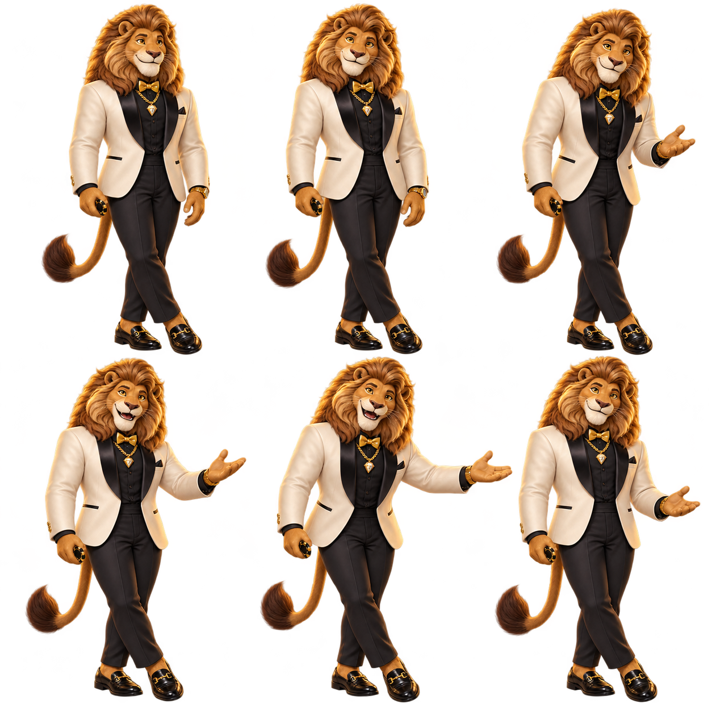

Boas-vindas, quadro a quadro.
Seis poses principais do gesto de apresentação. Leia da esquerda para a direita, primeiro a linha superior, depois a inferior.

01 · Repouso
Postura relaxada. A ficha permanece junto ao quadril.
02 · Contato visual
Olhar e cabeça reconhecem a chegada do jogador.
03 · Antecipação
O sorriso começa. O braço prepara o convite.
04 · Abertura
Cotovelo e antebraço abrem; a palma se volta para cima.
05 · Convite
Gesto amplo de apresentação, acompanhado pelo tronco.
06 · Acomodação
O braço suaviza e o corpo reencontra o apoio.
Prancha de conceito. A normalização do pivô dos pés e os quadros intermediários pertencem à próxima etapa. Baixar PNG transparente.